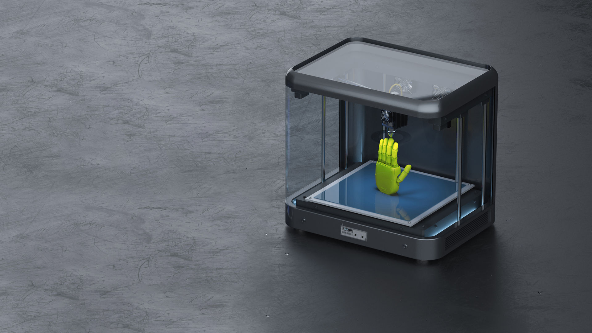

שולחים קובץ או מתארים את הצורך
שתפו אותנו במה שאתם רוצים לייצר: מה החלק צריך לעשות, כמה יחידות נדרשות והאם יש מועד יעד. אפשר לצרף מודל, שרטוט או צילום. גם ללא קובץ מוכן אפשר להתחיל בשיחה על הפרויקט.
תהליך ברור מתחיל בהבנת הפרויקט. בין שיש לכם קובץ מוכן ובין שאתם זקוקים לתכנון, נגדיר יחד מה צריך להשיג, מה כוללת העבודה ואיך מתקדמים לשלב הבא.

שתפו אותנו במה שאתם רוצים לייצר: מה החלק צריך לעשות, כמה יחידות נדרשות והאם יש מועד יעד. אפשר לצרף מודל, שרטוט או צילום. גם ללא קובץ מוכן אפשר להתחיל בשיחה על הפרויקט.
נבחן את המידע, נשלים פרטים ונבדוק אילו החלטות נדרשות לפני הייצור. בהתאם לצורך, נתייחס לתכנון, לחומר, לתהליך הייצור, לממשקים ולדרישות הגימור.
בהצעה נפרט את היקף העבודה, התוצרים, המחיר ולוח הזמנים. עבודת תכנון או בדיקות נוספות יוגדרו במפורש כאשר הן נדרשות.
כאשר הפרויקט כולל עבודת הנדסה, נפתח או נתאים את התכנון לפי הדרישות שסוכמו. אם נדרש אב טיפוס, נגדיר מה רוצים לבדוק באמצעותו ומה יהיה הבסיס להתקדמות.
בפרויקט שמגיע עם מודל מוכן, נברר אם נדרשות התאמות לפני תחילת הייצור.
לאחר אישור ההצעה והדרישות, נתקדם לייצור בתהליך שנבחר. גימור, הרכבה ובדיקות יבוצעו בהתאם למה שנכלל בפרויקט.
בסיום נמסור את התוצרים שסוכמו. אם נדרש סבב נוסף, שינוי בתכנון או ייצור כמות נוספת, נבחן יחד את הדרישות ואת הצעד הבא.
שלחו פרויקט לבדיקה